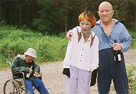

|
TRASH HUMPERS
Harmony Korine | USA 2009 | 78 Min.
Material: VHS
Format: DVD
Originalsprache: Englisch
Kamera: Harmony Korine
Schnitt: Leo Scott
Ton: Alex Altman, Jeremy Mazza
Mit Rachel Korine, Brian Kotzur, Travis Nicholson, Harmony Korine, Chris Gantry
Produktion: Charles-Marie Anthonioz, Amina Dasmal, Robin Fox
Vertrieb: Visit Films
Bester Dokumentarfilm, CPH:DOX, Kopenhagen 2009
Harmony Korine, enfant terrible der amerikanischen Independents legt mit TRASH HUMPERS ein lustvolles filmisches Zerstörwerk vor. Mit einer auf dem Flohmarkt erstanden (oder, so will es die Legende, einer auf dem Sperrmüll gefundenen) VHS-Kamera gedreht und mit zwei Videorekordern geschnitten, weist der Film deutliche Gebrauchsspuren auf und präsentiert sich in der Schmuddel-Ästhetik alter VHS-Tapes.
Korine ist mit TRASH HUMPERS ein bitterböser Kommentar zum Zustand der amerikanischen Gesellschaft gelungen. Seine Protagonisten sind eine Gruppe seniler Sabbergreise, die Mülltonnen ficken und Plastikpuppen enthaupten, ihre Identität unter pockennarbigen Masken verbergend. Sie sind die trashige Ausgabe der "Ex-Präsidenten" aus POINT BREAK, die die bürgerliche Welt in Angst und Schrecken versetzen. In jeder Einstellung verstoßen sie gegen den guten Geschmack und brechen die Tabus des angekratzten Mittelstandes.
Harmony Korine, geb. 1974 in Bolinas (Kalifornien), schrieb 19-jährig das Drehbuch zu Larry Clarks KIDS. Sein Regiedebut GUMMO, benannt nach dem fünften der Marx-Brüder, erhielt 1997 auf der Biennale in Venedig und dem Rotterdamer Filmfestival den Kritikerpreis. Korine war als erster Amerikaner Mitglied von "Dogma 95". Daneben dreht er Musikvideos, so "Sunday" von Sonic Youth, und stellt seine künstlerische Arbeit weltweit in zahlreichen Ausstellungen vor. Korine lebt in New York.
Filme: 2010 Act Da Fool | 2009 Trash Humpers | 2007 Mister Lonely | 2004 Corporate Ghost | 1999 Julien Donkey-Boy | 1998 The Diary of Anne Frank Part II | 1997 Gummo
zurück
|